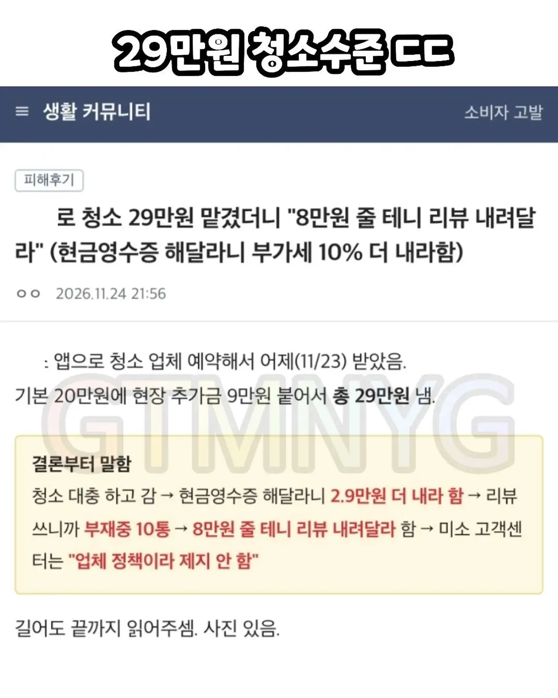
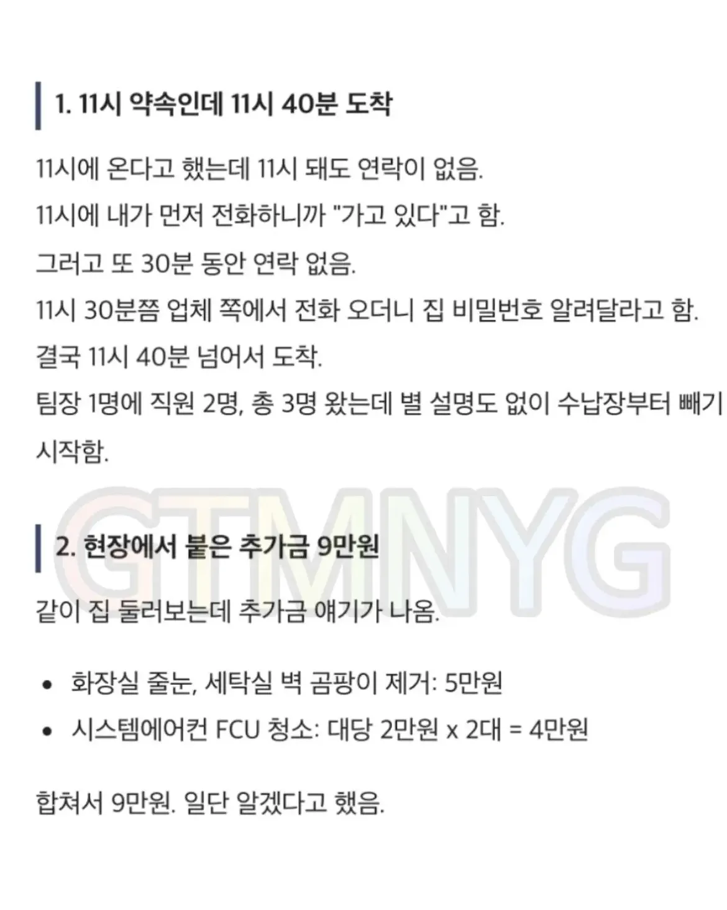
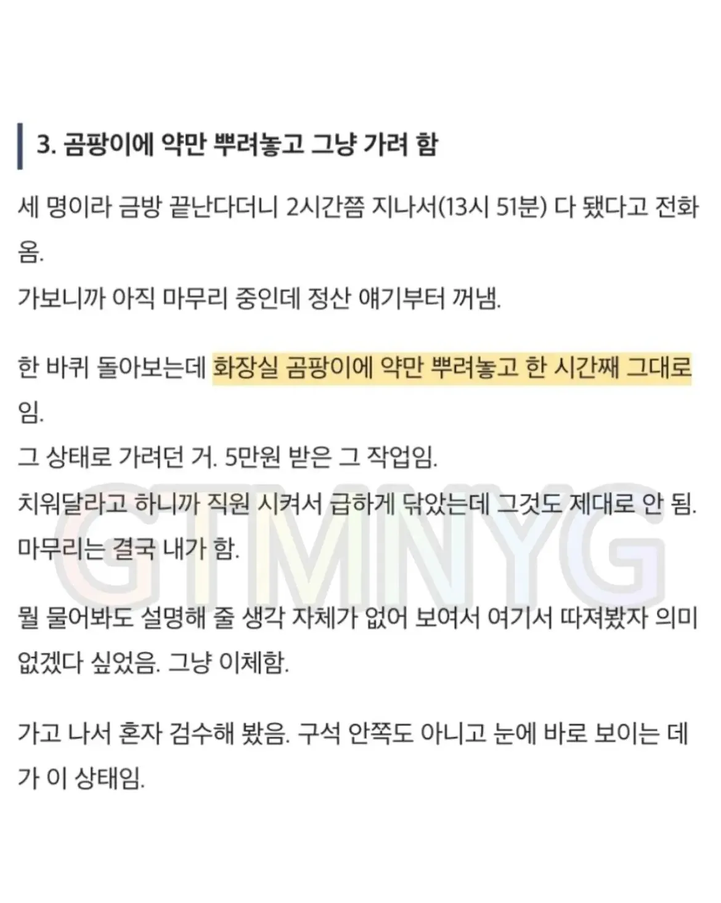
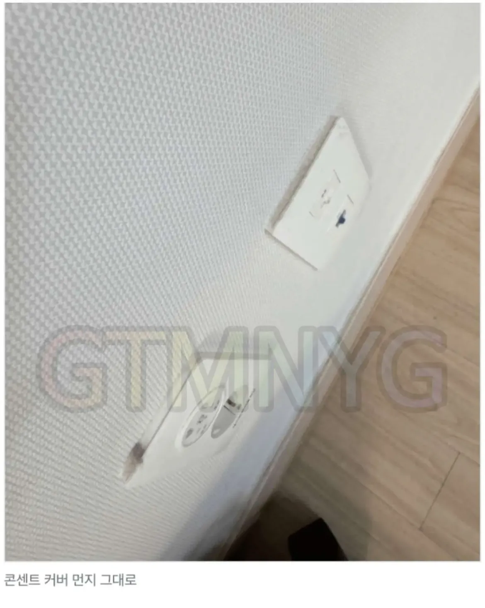
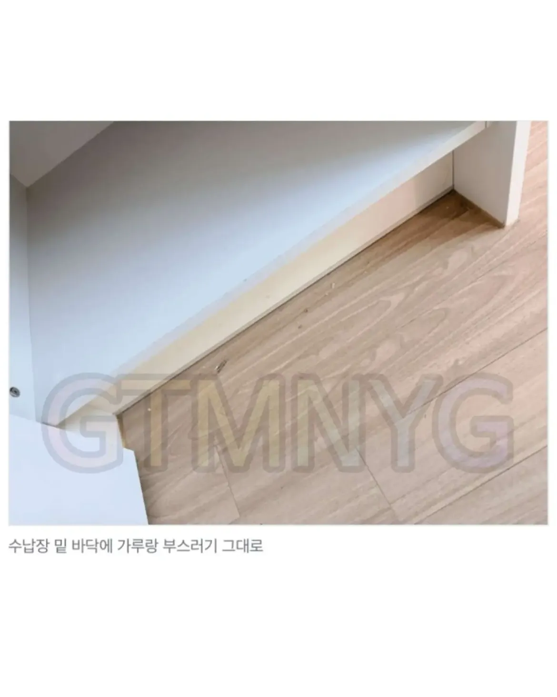
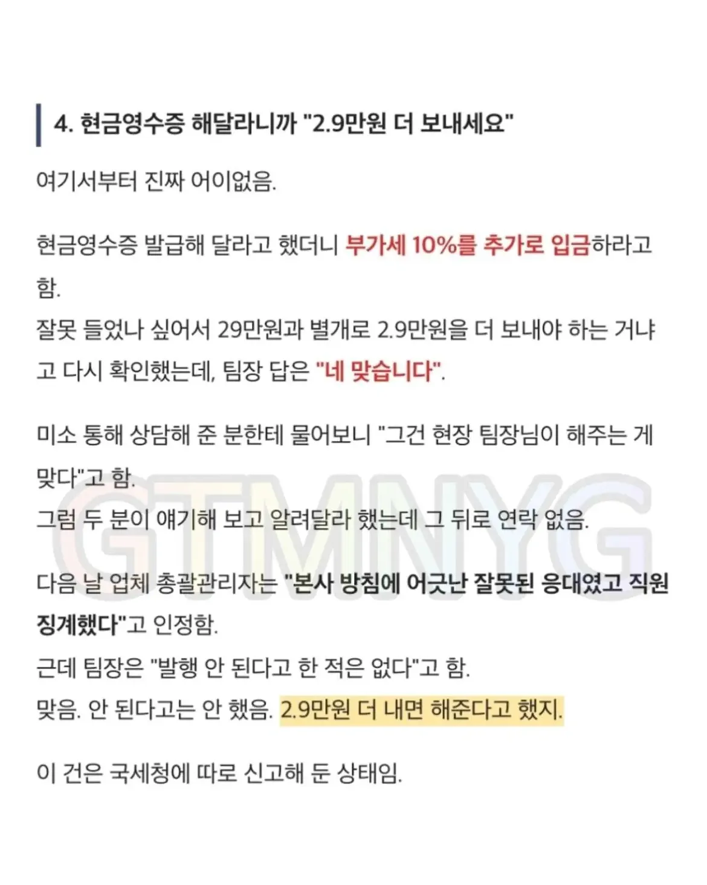
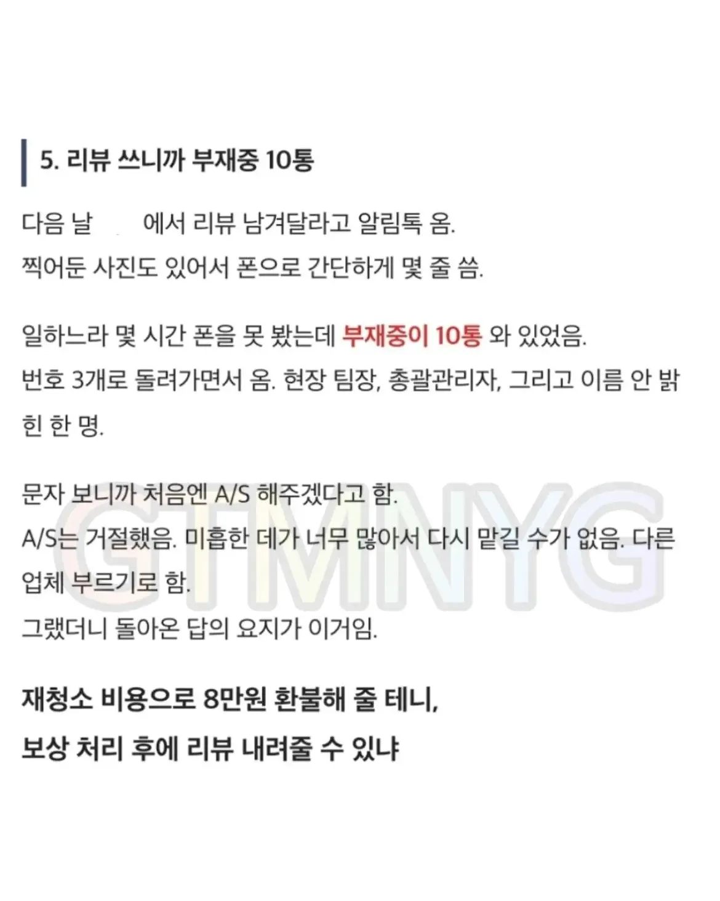
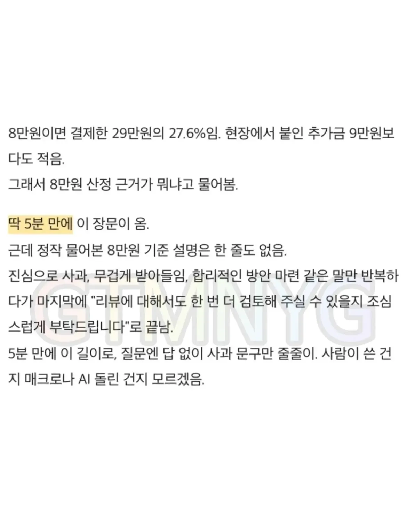
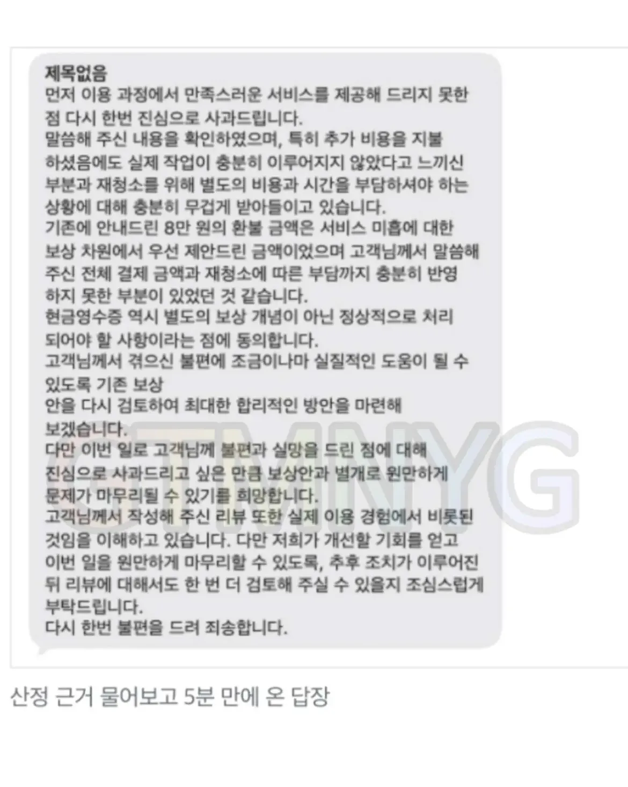
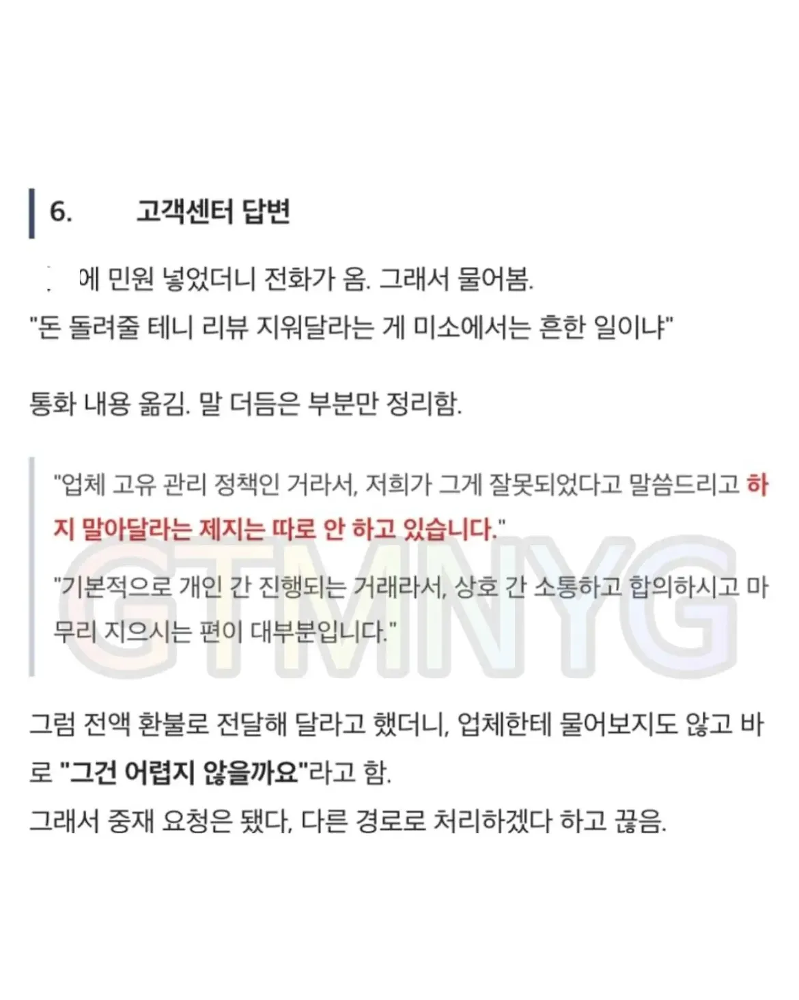
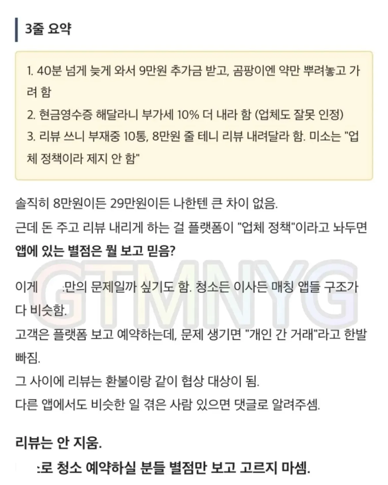











나도 써봤는데 그 이후로 미소 절대안쓴다
책임 ㅈ도안지면서 수수료떼먹을꺼면 왜 만들었나 모르겠음
걍 직접 업체 컨텍하는게 나음
청소업체 걍 한번써보고 다시는 안쓴다고 다짐함
우리집 주소 다 공개되고 내가 리뷰 개차반으로 써주면 어떤짓을할지 몰라서
걍 내가 청소함
저거 그대로 믿을수도 없는게 요즘 청소는 거의다 후불제임.
계약금으로 2~5만원만 내고 잔금은 청소후에 본인이 확인하고 잔금치르는 방식이라 저런식으로 청소하면 돈 못받아감.
29면 2명 하루종일 일하는 일당수준인데 걍 1~2시간 뽀로록 하고 마는거네
나 작년에 신혼집 입주청소 숨고로 했는데
가격도 좋고 스팀도 해준대서 한 업체 고름. 리뷰써주면 2만원 페이백 이벤트
청소당일 약속시간보다 10분정도 먼저 왔는데 장비 두고왔다고 해서 다시 감(이건 실수니깐 그러려니함)
전용18평인데 팀장+아주머니 한분 총 2명이 옴.
베란다쪽 상태 개판+창문 노답이라 추가요금 8만원? 부름-> 내가봐도 심해서 콜
오전에 시작했는데 12시 되도록 거실,안방 시작못함(장비가지러 갔다 늦게옴+베란다 추가청소)
12시 좀 넘으니 다음 청소예정 집에서 전화 계속옴( 점점 속도가 늦어지고 퀄이 떨어짐)
암튼 20대중후반 팀장이란 사람이 그래도 열심히는 해서 고생했다고 보냈지만 청소는 디테일이라고 수전이나 기타 청소상태가 업체 썻다고 생각되지않음. 그래서 별점 4로 올림
바로 업체에서 연락오더라. 리뷰 5점으로 써달라. 4점이면 리뷰 페이백 안된다. 1차 빡침
리뷰가 뭐냐 내 생각쓰는건데 맘에 안든걸 안든다고 했는데 ㅈㅅ...그런 as팀장이 연락할거다
몰라 전화 끝나고 난 3점으로 내릴거다.
as팀장 연락와서 ㅈㅅ...as해주겠다. 전용18평엔 2명만 들어가다보니 종종 미흡하다 ㅇㅈㄹ. 미흡한 경우가 있으면 3명이 다니던 시간을 길게 잡아야되는거고 내 알빠아님 ㅅㄱ. as청소하러 가겠다. ㄲㅈ.
하더니 청소팀장 전화와서 ㅈㅅ하다... 젊은사람이 개고생한거 봐서 약해짐.
암튼 청소업체리뷰는 개 ㅅㅂ 다 주작이더라
지역자활센터에 청소업체가 좋더라
수급자나 차상위계층 아주머니분들이 청소 해주시는데 이게 진또베기임
너무 더러우면 잔소리도 하시더라
청소업체들 경쟁때문에 싼가격에 계약하고 추가비용으로 돈버는거라 추가비용이 없긴 힘든거 같던데, 집크기는 모르겠지만 30만원이면 싼거일텐데
추가비용붙일거면 견적은 왜보내냐 시발
빈집청소하는데 개야마돔 ㄹㅇ로
걍 청소업체나 사람쓰는것은 그냥 인터넷에서 찾는것보다 이미 주변에서 써본사람들을 통해서 바이럴된 업체를 찾는게 맞더라. 보통 사람건너서 연결된곳은 친절하고 잘함.
현금영수증 돈더달라하면 신고해도되는거냐??
나도 입주청소업체 찾다가 리뷰많은 사업체랑 동네개인업체 중에서 후자가 가격도 싸기도 하고, 동네에서 하는 사람이면 괜찮겠지라는 생각에 불렀는데 ㅈㄴ 실망함.
청소 개대충 하고, 어떤 곳은 청소 1도 안 되어있길래 따지니깐 그제서야 "거기는 때가 너무 오래 묵어서 안 지워져요" 이러더라.. 안 지워지면 사전에 나한테 말을 하든지, 그리고 그거 없애라고 돈주고 부른거 아닌가.. 그래서 나중에 내가 닦아보니깐 지워짐 ㅋㅋ
하튼 가격 떠나서 규모있고 리뷰 확실한 업체 부르는게 낫다는걸 깨달음